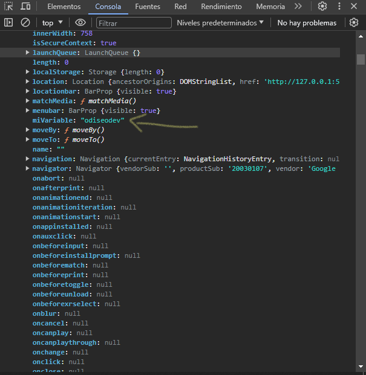
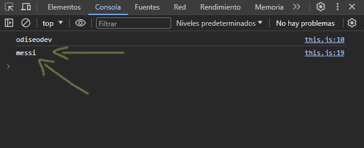
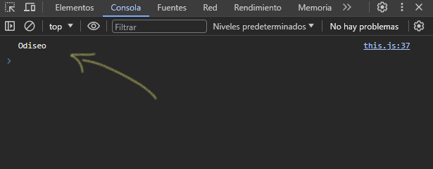
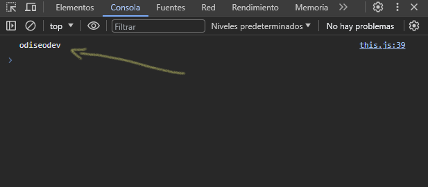
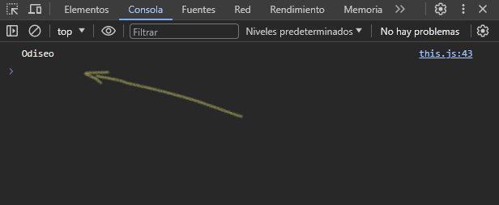

Nota: Cuando estamos trabajando en la creación de un objeto y dentro de este objeto hay propiedades y métodos que van interactuar entre ellos dentro del objeto literal, se recomienda usar funciones anónimas, ya que las arrow function no crean un "scope".
En general, el valor de this esta determinado por como se invoca a la función. No puede ser establecida mediante una asignación en tiempo de ejecución, y puede ser diferente cada vez que la función es invocada. ES5 introdujo el método bind() para establecer el valor de la función this independientemente de como es llamada, y ES2015 introdujo las funciones flecha que no proporcionan su propio "binding" de this (se mantiene el valor de this del contexto léxico que envuelve a la función).
this hace referencia al objeto global del navegador llamado window. Crearemos una variable que cuelga del objeto global del navegador de la siguiente manera:
this.miVariable = "odiseodev"
console.log(this)
Hemos creado una variable llamada "miVariable" con el valor de "odiseodev", mostremos por consola a this para poder ver la variable que hemos creado:
Crearemos una función que nos imprima por consola la variable que creamos en el objeto global del navegador.
function imprimir() {
console.log(this.miVariable)
}
imprimir() // nos devuelve el valor de la variable
Ahora veamos como se comporta this cuando hacemos lo mismo pero en otro ámbito, dentro de un objeto:
let obj = {
miVariable: "messi",
imprimir: function() {
console.log(this.miVariable)
}
}
obj.imprimir()
Dentro del objeto creamos una propiedad con el mismo nombre de la variable que creamos para el objeto global del navegador, dentro definimos una función el cual nos imprima el valor de esa propiedad por consola por medio de this, por ultimo, llamamos al objeto e invocamos la función para mostrar por consola el resultado, y veamos cual es el valor que nos muestra:
Observamos que this nos devuelve el valor de la propiedad del objeto. Es decir, this hace referencia al contexto de donde se llama la función. Al estar dentro del objeto, this hace referencia a la propiedad llamada "miVariable", por ende, no imprime el valor de la variable del objeto global que definimos, si no que, hace referencia al contexto donde se encuentra. En este ejemplo this es ligado al objeto y no al contexto global.
Y lo mismo sucede si creamos otro objeto y hacemos lo mismo:
let obj2 = {
miVariable: "cr7",
imprimir
}
obj2.imprimir()
El valor que se imprimirá sera "cr7", por que this esta ligado al objeto.
Teniendo en cuenta el concepto anterior, veamos otro ejemplo con una función constructora que retorna una función:
function Usuario(miVariable) {
this.miVariable = miVariable
return console.log(this.miVariable)
}
let odiseo = new Usuario("Odiseo")
odiseo
En este ejemplo, retornamos un simple console.log(this.miVariable) teniendo como resultado el valor que se le asigno al constructor:
Pero que pasa si retornamos una función, editemos el código y retornemos una función anónima:
function Usuario(miVariable) {
this.miVariable = miVariable
// return console.log(this.miVariable)
return function () {
console.log(this.miVariable)
}
}
let odiseo = new Usuario("Odiseo")
// odiseo
odiseo()
Ahora veamos el resultado:
Nos devuelve el valor de la variable que creamos directamente al objeto global del navegador. Y esto se debe a que estamos retornando una función, por ende, esta función que se esta retornando tiene su propio "scope".
Para solucionar esto, recordemos en la nota anterior que, las arrow function no crean un scope, en este tipo de casos SI conviene usar una arrow function como valor de retorno de la función constructora.
function Usuario(miVariable) {
this.miVariable = miVariable
// return console.log(this.miVariable)
/* return function () {
console.log(this.miVariable)
} */
return () => console.log(this.miVariable)
}
let odiseo = new Usuario("Odiseo")
// odiseo
// odiseo()
odiseo()
Ya con esta solución podemos ver de nuevo el valor que le pasamos al constructor:
Para poder solucionar este tipo de casos, tenemos palabras reservadas llamadas call, apply & bind. El cual veremos en el siguiente capitulo.